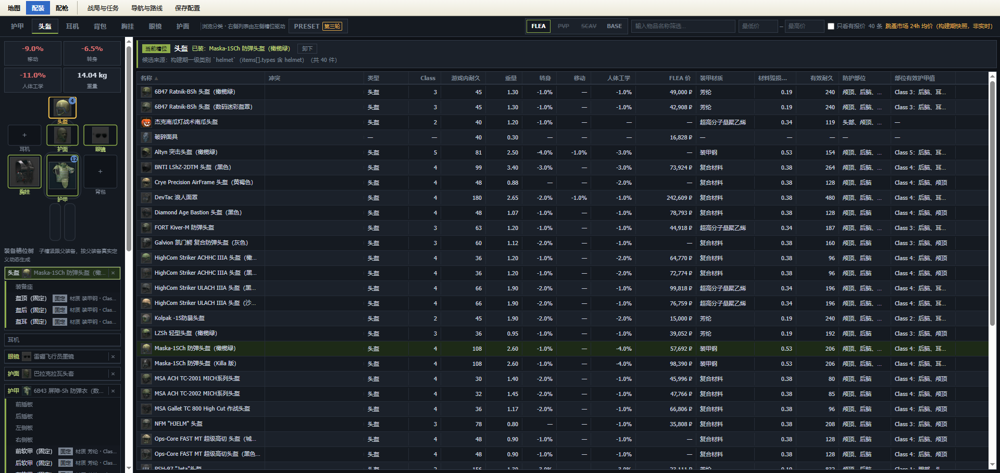
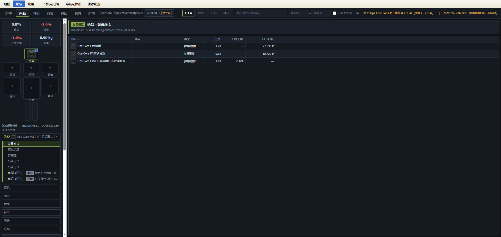
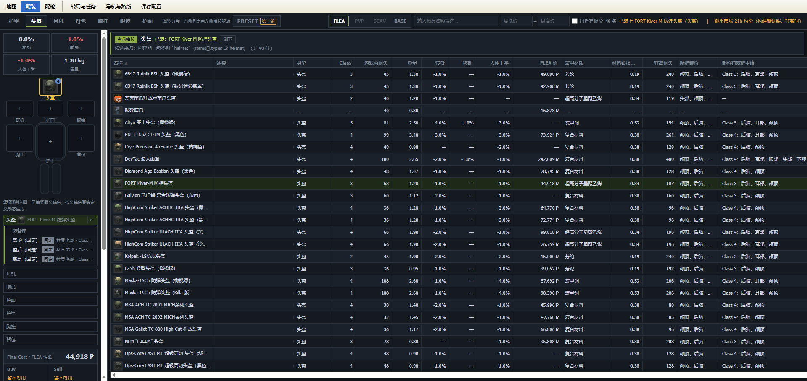
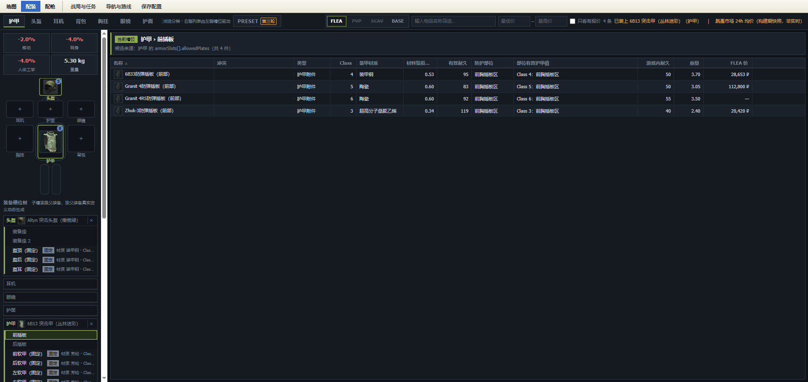
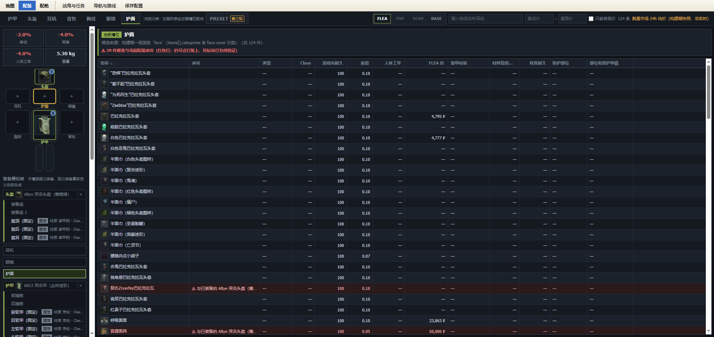
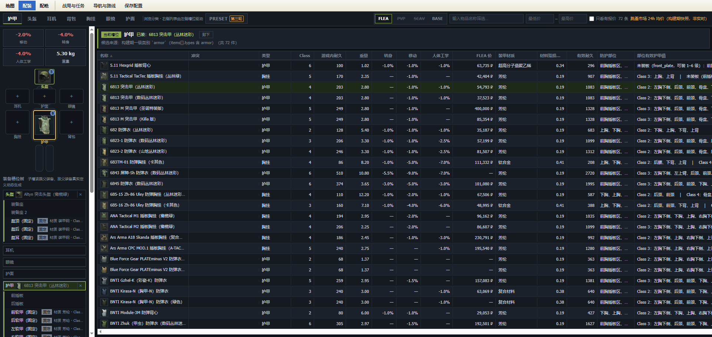
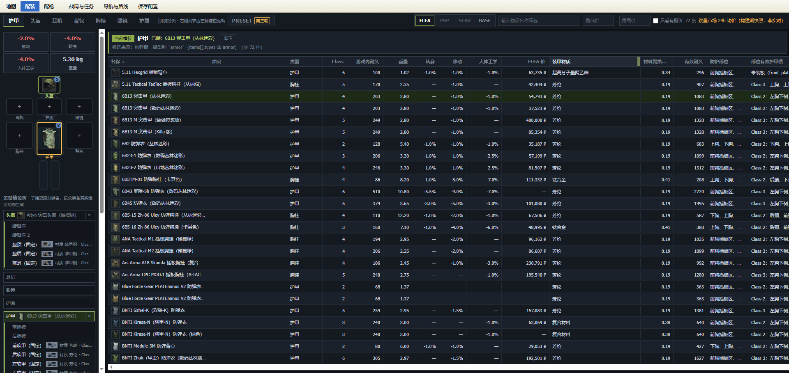
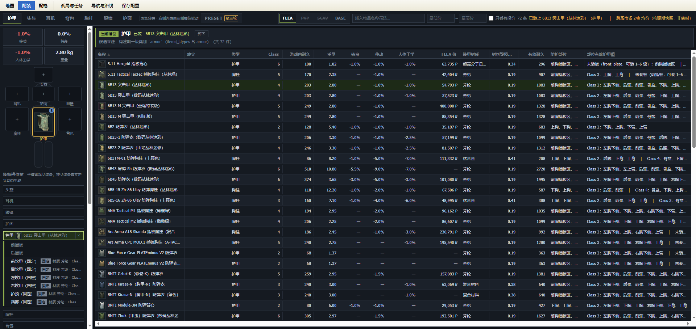
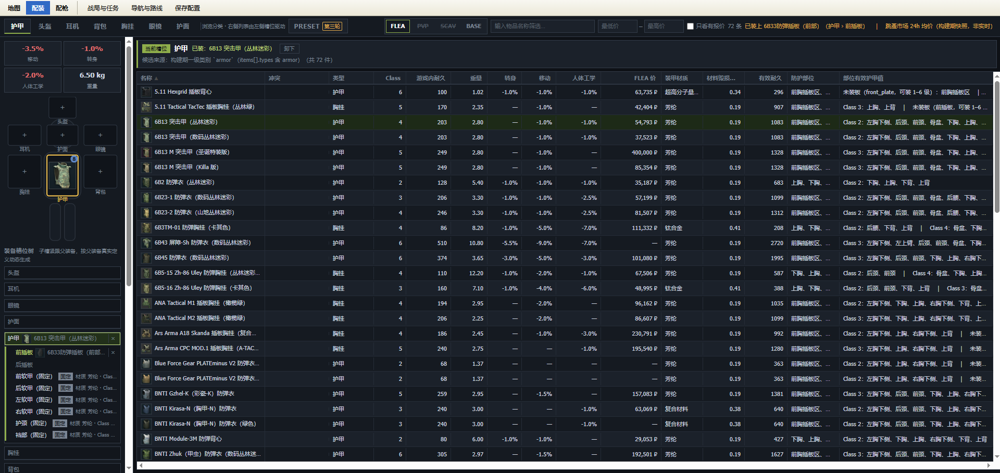

本轮明确指出的分类错误（FACE COVER 混入护甲板、EYEWEAR 混入头盔面罩）与布局错误（附件槽统一堆在面板底部、内衬被标为「数据缺失」）均已修复，未遗留到后续阶段。全量回归 637 passed / 1 skipped，地图功能零回归。
| 要求 | 落地方式 | 实测证据 |
|---|---|---|
| 子槽紧跟父装备，不再集中到面板底部 | 槽位改为嵌套树 #lw-tree，每个根槽一个 .lw-node-group，子槽放其内 .lw-node-kids |
DOM 实测：#lw-tree 下恰好 7 个 .lw-node-group；.lw-node-kids.parentElement === group；人形 SVG 的 7 个槽位框未被改动 |
| 父装备附近形成清晰视觉层级 | CSS 缩进 + 连接线（.lw-node-kids），固定内衬带 .lw-node-liner + .lw-fixed-badge |
截图 r2-02 / r2-03：子槽紧贴父装备行下方缩进显示 |
| 其他部位不因某个装备增加附件而整体错位 | 树为独立滚动容器，不参与人形槽位布局 | 装 Ops-Core FAST MT（8 行槽位树）前后，人形 7 槽位坐标不变 |
| 选中子槽时右侧显示面包屑路径 | nodeLabel(node) → 渲染到 #lw-focus .lw-focus-name |
实测返回「头盔 › 装备座 1」「护甲 › 前插板」；候选来源写作「护甲 的 armorSlots[].allowedPlates（共 4 件）」 |
| 更换父装备时立即重建子槽、清理失效附件 | installItem 后重建 children，递归清理不再被允许的子槽与其已装件 |
测试 T7 / T8 / T9：旧子槽键被清掉、不再被允许的附件自动卸下并给出可见提示 |
| 装备 | 子槽结构 | 行数 |
|---|---|---|
| Ops-Core FAST MT 头盔 | 装备座 1 / 夜视仪座 / 安装座 / 装备座 2 / 装备座 3 + 2 个固定内衬 | 8 |
| FORT Kiver-M 头盔 | 装备座 + 3 个固定内衬 | 5 |
| Altyn 突击头盔 | 装备座 / 装备座 2 + 3 个固定内衬 | 6 |
| 6B13 突击甲（护甲） | 前插板 / 后插板（kind=plate）+ 6 个固定软甲（kind=liner，data-remove="none"） |
8 |
三顶头盔的可装附件槽与内衬数量各不相同，证明子槽由物品真实数据驱动，不是统一模板。
| 要求 | 落地方式 | 实测证据 |
|---|---|---|
| 标记固定组件 | 节点 def.fixed === true / def.removable === false，节点 kind === "liner" | 测试 U1：fixed=true / removable=false 断言通过 |
| 显示在装备下方并区分固定 | 标签后缀「（固定）」+ .lw-fixed-badge | nodeLabel(liner) 含「固定」；截图 r2-03 可见「固定」徽标 |
| 不提供安装 / 卸下 / 替换操作 | 对 liner 节点 equipItem 为空操作；data-remove="none"；选中内衬回退到父装备槽位 | 测试 U1：候选数 0、equipItem 空操作、state.focus 回退到 helmet |
| 父装备更换时内衬同步更新 | 内衬随父装备 aps[] 重建 | 测试 U1：换成无内衬头盔后内衬槽消失；换回后按新结构重建 |
| 展示上游提供的真实防护数据 | 渲染材质 / Class / 耐久 / 防护区 | 实测行：「盔顶（固定）固定 · 材质 复合材料 · Class 4 · 耐久 24 · 防护 颅顶」 |
不得因无 allowedItems 就标「数据缺失」 | 来源文案改为「不可单独拆卸 / 更换（候选为空是设计如此，不是数据缺失）」 | 测试 U1：文案同时含「不可单独拆卸」与「不是数据缺失」，且不含「数据缺口」 |
区分了两件事：不能单独拆卸 ≠ 没有数据（内衬有完整的材质 / 等级 / 耐久 / 防护区）；固定组件 ≠ 可自由选装的子槽（候选为空是设计，不是缺口）。未伪造新装备，未虚构价格与属性。
| 要求 | 结果 |
|---|---|
| 只展示真正面部穿戴槽物品 | ✅ 124 件，前 12 件均为巴拉克拉瓦头套 / 半面巾等 |
| 护甲板必须归入 ARMOR 插板结构 | ✅ FACE COVER 中命中护甲板 id 的行 = 0 |
| 禁止再用「ArmorAttachment 且未被 slots[].allow 引用」推断 | ✅ 规则已替换为上游真实分类 cats ∩ face-cover；旧近似集合识别出恰好 38 件全为 armorPlate 的错误根因已定位 |
| 以稳定物品 ID 为依据、附带分类来源的可审计映射 | ✅ 构建期落 cat 字段 + 顶层 audit（含 rules / labels / categoryIds / duplicates / pending） |
| 无法确定归属的进入待审核清单 | ✅ audit.pending = 135 件（ArmorAttachment 79 + Helmet 56），未静默混入 |
已区分普通面部头套、装甲面罩、头盔面罩与护甲板：四者不再因名称 / 材质 / ArmorAttachment 大类相同而被视为同类。
| 要求 | 结果 |
|---|---|
| 只显示独立眼部装备 | ✅ 40 件，前 12 件均为墨镜 / 护目镜 |
| 头盔面罩 / 面屏 / 夜视仪 / 头盔专用附件进入各自槽位 | ✅ 规则 = ts ∩ {glasses} 且 cats ∩ vis-observ-device；EYEWEAR 中命中「头盔 slots[].allow」的行 = 0 |
不能只靠 pt / 名称关键词 / 泛化类别 | ✅ 改用真实根槽位 + 物品兼容关系 |
| 四类互斥可核验 | ✅ 七类两两交集全部为 0 |
| 新增分类检查：数量 / 重复归类 / 无法确认 | ✅ 页面 #lw-audit 面板（截图 r2-05） |
| 一级类 | 件数 | 判定依据 |
|---|---|---|
| 护甲 ARMOR | 72 | types ∩ {armor} |
| 头盔 HELMET | 40 | types ∩ {helmet} |
| 耳机 HEADPHONES | 28 | types ∩ {headphones} |
| 背包 BACKPACK | 47 | types ∩ {backpack} |
| 胸挂 RIG | 82 | types ∩ {rig} |
| 眼镜 EYEWEAR | 40 | types ∩ {glasses} 且 categories ∩ vis-observ-device |
| 护面 FACE COVER | 124 | categories ∩ face-cover（扣除被 helmet 优先占用的 3 件） |
互斥 七类两两交集全部为 0 | 重复归类 26 件，按优先级消解并记录 | 待审核 135 件（ArmorAttachment 79 + Helmet 56），未静默混入正式列表
| 要求 | 实测证据（真实 CDP 鼠标事件，非合成 DOM 事件） |
|---|---|
| 拖动表头边界调列宽 | ✅ 装甲材质 112px → 222px，--tbl-cols 同步为 … 222px … |
| 每列独立宽度 | ✅ 名称 / 冲突 / 重量 / 价格 / 装甲材质 / 防护部位等各自独立，widths[] 逐列可控 |
| 每列合理 min / max | ✅ clampW 优先使用列自身 min/max；装甲材质 实测钳到 80（最小）/ 260（最大）；未声明时回落 56 / 520 |
| 表头与单元格对齐 | ✅ alignOK: true，表头宽度数组 完全等于 数据行宽度数组 [246,190,86,62,86,70,66,66,86,116,222,80,82,100,295] |
切列 / setColumns() 保留宽度、同名同义列复用 | ✅ 护甲（15 列）→ 眼镜（5 列）→ 护甲（15 列）后 222 与 80 均保留；shared 桶使同名同义列跨类别复用 |
| 搜索 / 排序 / 筛选 / 分页 / 冲突红色不失效 | ✅ 拖动后搜索仍过滤（过滤时 12 行、清空后 72 行）、排序标记保持、选中态保留、200 条分片正常 |
| 横向滚动正常，不缩字体硬塞 | ✅ .loadout-workbench 内 --tbl-cols 保留像素宽度，.tbl-scroll 横向滚动；无字体缩放 |
| 按类别持久化、重启后恢复 | ✅ 三重证明见下表 |
样式与交互限定 .loadout-workbench | ✅ CSS 测试断言全部选择器均以 .loadout-workbench 开头；地图视图与原表格未改 |
扩展现有 createTable()，不重复造表 | ✅ 在 createTable 内新增 .tbl-grip 拖柄与 onResize 回调，未新建平行组件 |
| # | 环节 | 证据 |
|---|---|---|
| 1 | 即时写入 localStorage | localStorage["eftmap.colw"] = {"byCat":{"face":{...},"armor":{"zoneCls":295,"matLabel":80}},"shared":{...}} |
| 2 | 落盘到用户级配置文件 | %APPDATA%\EFTMap\eftmap.config.json → ui.colw 与 localStorage 内容完全一致 |
| 3 | 真重启恢复 | 清空 localStorage 的 eftmap.colw → 结束 serve.py 进程 → 重新启动 serve.py（新 PID，HTTP 200）→ 重新加载页面 → 列宽原样恢复（matLabel:80 / zoneCls:295 / n:246），localStorage 被从配置文件重新回填 |
6B13 突击甲实测量（同一行同时展示六列，取值各不相同）：
| 列名 | 实测值 | 语义说明 |
|---|---|---|
| 装甲材质 | 芳纶（Aramid） | 上游 properties.material，含 8 键统一中文映射 |
| 材料毁损系数 | 0.19 | 上游 armorMaterials[mat].destructibility |
| 有效耐久 | 1083 | = dur ÷ destructibility = 203 / 0.1875，按核验公式计算 |
| 防护部位 | 前胸插板区、后背插板区、上胸、下胸、上背、下背、左胸下侧、右胸下侧、前颈、后颈、骨盆 | 上游 properties.zones，含 30+ 项中文映射 |
| 部位有效护甲值 | Class 2：左胸…骨盆、上胸… ｜ 未装板（前插板，可装 3–6 级）：前胸插板区 ｜ 未装板（后插板，可装 4–6 级）：后背插板区 | 结合父装备软甲 aps 各区等级 + 已安装插板状态，不把携带具单一 Class 复制到所有区域 |
| 游戏内显示耐久 | 203 | 游戏内物品信息的基础耐久（properties.durability），与「有效耐久 1083」明显不同 |
| 时点 | 部位有效护甲值 |
|---|---|
| 装板前 | Class 2：左胸下侧、后颈、前颈、骨盆、下胸、上胸、右胸下侧、下背、上背 ｜ 未装板（前插板，可装 3–6 级）：前胸插板区 ｜ 未装板（后插板，可装 4–6 级）：后背插板区 |
| 装上 6B33 防弹插板（前部）Class 4 后 | Class 2：… ｜ Class 4：前胸插板区 ｜ 未装板（后插板，可装 4–6 级）：后背插板区 |
实测节点状态同步变化：armor/Front_plate → on（已装 6B33 防弹插板（前部）），armor/Back_plate → empty（仍标「未装板」）。前插板候选实测 4 件：6B33（Class 4）、Granit 4（5）、Granit 4RS（6）、Zhuk-3（3），等级区间与界面提示「可装 3–6 级」一致。
只有真正安装的插板才贡献等级；未安装的槽位明确标注「未装板」并附可装等级范围。未安装插板的携带具不会被显示成已获得该插板的防护等级。
| 类别 | 件数 | 材质 | 毁损系数 | 有效耐久 | 防护部位 | 部位护甲值 |
|---|---|---|---|---|---|---|
| 护甲 | 72 | 72/72 | 72/72 | 72/72 | 72/72 | 72/72 |
| 头盔 | 40 | 39/40 | 39/40 | 39/40 | 39/40 | 36/40（杰克南瓜灯显示「—」） |
| 胸挂 | 82 | 36/82 | 36/82 | 36/82 | 36/82 | 36/82 |
| 护面 | 124 | 17/124 | 17/124 | 17/124 | 17/124 | 0/124（全部「—」） |
| 耳机 / 眼镜 / 背包 | — | 列集本身不含护甲属性列 | ||||
护甲、护甲板及其他确有对应属性的装甲物品才展示这些列；不适用的字段显示「—」，未用假数据填充。材质、耐久、有效耐久、防护区域与护甲等级在游戏数据中属于不同概念，已分列而非合并。
python -m pytest tests -q → 637 passed, 1 skipped in 36.91s
地图、搜索、任务、设置、图层等既有模块全部通过，无回归。
| 分组 | 内容 | 用例数 |
|---|---|---|
| 静态结构 | 工作台骨架、旧三栏布局已移除、其他视图未受影响、旧符号已清、setColumns 已暴露、工具条默认开、CSS 全部限定、横向滚动保留、嵌套槽位树容器 | 11 |
| T1–T12 | createTable 基础渲染 / 切列 / 排序 / 搜索 / 过滤 / 选中 / 滚动 / 节点复用 / 回调 / 分片 / 板位 / 统计 | 12 |
| R1–R5 | 列宽拖动、持久化接管、切列清理、同名同义列复用、拖动不影响搜索与选中 | 5 |
| T1–T12（槽位模型） | 七类互斥、槽位驱动候选、冲突双向判定、动态子槽生成、父装备更换后子槽清理、缺口槽、护甲板槽、统计 | 12 |
| U1–U6 | 固定内衬、五种头盔结构互异、护甲插板槽、四概念不混淆、列宽持久化与钳制、父子槽不共享父节点 | 6 |
| # | 用例 | 结果 |
|---|---|---|
| 1 | 父装备下方显示其附件槽，其他装备的附件不再集中放在左侧面板底部 | ✅ 通过 |
| 2 | 固定内衬正常显示，不提供拆卸操作，不再显示为「数据缺失」 | ✅ 通过 |
| 3 | FACE COVER 不包含护甲板 | ✅ 通过 |
| 4 | EYEWEAR 不包含错误归类的头盔专用附件 | ✅ 通过 |
| 5 | 不同头盔的附件槽结构正确且彼此不同 | ✅ 通过 |
| 6 | 不同护甲的插板槽位及安装关系正常 | ✅ 通过 |
| 7 | 拖动列边界可实际调整宽度 | ✅ 通过 |
| 8 | 动态切换表格列后宽度配置按预期保留 | ✅ 通过 |
| 9 | 列宽在重启应用后可恢复 | ✅ 通过 |
| 10 | 护甲基础耐久、材质毁损系数、有效耐久和防护区域显示互不混淆 | ✅ 通过 |
| 11 | 冲突判断、装备替换、统计计算和已有地图功能全部通过回归测试 | ✅ 通过 |
测试方式：动态运行（Node DOM 垫片 + 拔出的纯函数）+ 真实 headless Chrome CDP 交互（真实鼠标事件拖动列边界，Page.captureScreenshot），非静态 HTML 字符串断言。
全部 1920×909、8-bit、color type 2（同分辨率同格式）。采集方式：headless Chrome + Emulation.setDeviceMetricsOverride(1920×909) + Page.captureScreenshot。






--tbl-cols 快照


| # | 项目 | 实测证据 | 处理 |
|---|---|---|---|
| 1 | 待审核分类 135 件 | audit.pending = {count:135, byType:{ItemPropertiesArmorAttachment:79, ItemPropertiesHelmet:56}} | 进入待审核清单，未静默混入正式列表 |
| 2 | 重复归类 26 件 | audit.duplicates = [{id, keys, resolved}, …]（list，26 条） | 按优先级消解并逐条记录 resolved |
| 3 | 头盔 armorSlots[] 部分仅有 zone、无 allowedPlates |
FAST MT / Altyn / SSh-68 的 aps 均为 [{zone:…}] |
不虚构；这些头盔的侧甲 / 护颚实际走 slots[]，已能正常安装 |
| 4 | 内衬条目无中文本地化 | 内衬 name 在 items_zh.json 中查不到对应键 |
用 zone 名（盔顶 / 盔后 / 前软甲…）作显示名；不计为数据缺口 |
| 5 | 胸挂仅 36/82 具备护甲属性 | 如 56 式胸挂各护甲列均为「—」 | 不伪造，不适用的列显示「—」 |
| 6 | 跳蚤价覆盖不足 100% | 部分护甲 / 耳机无 l 字段 |
价格列显示「—」，标注「构建期快照，非实时」 |
待确认 无装甲的护面也会显示「游戏内耐久」。
cat=face 的 124 件护面上游均给出 dur（取值集合 {25, 30, 35, 40, 55, 100}），但只有 17 件同时具备 mat / cl / z。也就是说，纯布料头套也会在「游戏内耐久」列显示一个数值。
该值来自上游、非伪造，因此按规则保留展示。但它是否适合《游戏内显示耐久》列的语义（无装甲件是否有耐久概念），建议由您裁定；若认为不合适，可改为「该类物品不显示该列」或「显示 —」。同理，杰克南瓜灯战术南瓜头盔有 mat / dur / zoneText 但无 aps → 部位有效护甲值显示「—」，属正确降级。
| 步骤 | 内容 | 状态 |
|---|---|---|
| 第一步 | 父子槽位布局 + 固定内衬 + FACE COVER / EYEWEAR 分类 | ✅ 已完成（截图 r2-02/03/05） |
| 第二步 | 列宽调整 + 护甲属性列 | ✅ 已完成（截图 r2-04/06/07/08） |
| 第三步 | 同分辨率截图 + 完整测试结果 + 数据缺失报告 + 列宽持久化证明 | ✅ 本报告 |
本轮未提前实现独立预设存储或其他后续阶段功能；本轮明确指出的分类错误与布局错误已全部修复，未留到后续阶段。等待您确认后再进入正式视觉验收。